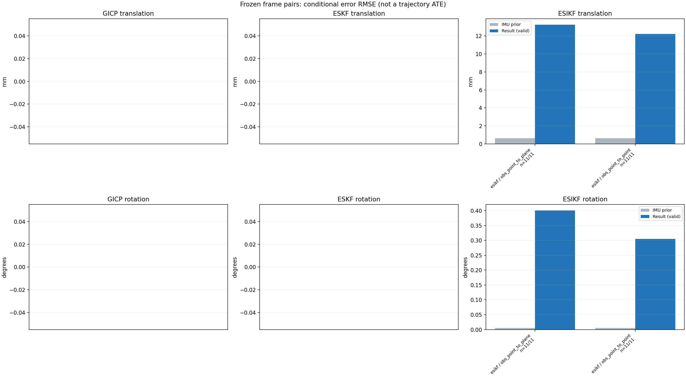

20261015_112757_right · depth=disparity_cache · cache=a8857fede779f785dfed
模型视差：/home/ubuntu22/slam/SIO_SLAM/models/tensorrt/disp_896x448_fp16.plan；engine SHA256=604cf6ac1f705c877260711730dd5d2d58c2a21f3020c03c668401ef7fb1e768。输入为生产裁剪与光照处理后的 RGB 0..255；此实验使用原始浮点像素视差，不应用完整前端的邻域视差后处理。
原始 ONNX SHA256：e9f49736a65d68d06681add463866b6defdf78fdd7f4f50f6cc941b682fdc0bc。
代价体图改写验证：ONNX Runtime 固定随机特征输入，最大绝对误差 0；该项检查图改写，完整模型精度仍需由录制数据评估。
配准代码版本：744ac2d993ae629b0cc44a3b1d995e04ab4fad48；观测生成版本：744ac2d993ae629b0cc44a3b1d995e04ab4fad48。
固定图像对与纯 IMU 先验；ESKF 回放固定 GICP 观测，ESIKF 直接读取点云。真值只用于此报告。
同时查看 converged 与 solver_status：上游默认 Stereo 在 max_iter / stopped_at_minimum 时也可能置 converged=true。valid 表示输入检查通过，不表示精度提升。欧氏 GICP 未提供独立的点距 RMSE，该列显示 NaN。
误差按每对图像的锚点计算，单位 m / degrees。此处 RMSE 不是全序列 ATE；末帧受同一锚点条件约束。NIS 与条件马氏距离是诊断量，少量相关图像对不能用于宣称协方差已校准。
全部指标 CSV · R / P 矩阵 CSV · Stereo 求解逐轮 CSV · ESIKF 逐轮轨迹 CSV · 末轮 H / R / K_pose 矩阵 CSV · 配置快照 · 矢量图
unflagged 排除纯惯性先验平移误差超过 50 mm 的图像对；whitened 为误差按协方差白化后的每自由度均值，协方差与实际误差相符时约为 1。prior_whitened 用真值误差只检验先验 P；NIS 为 ESIKF 首轮 rᵀ(P+R)⁻¹r，不用真值，检验的是 P+R 的总量，单靠它分不开 P 与 R，偏差、错误对应和线性化误差也会抬高它。观测方差超过先验方差 1e+04 倍的方向视为不可观，从 NIS 及其自由度中去掉（nis_dof）。一致时 nis_per_dof 均值约 1、nis_over_chi2_median 中位数约 1；帧对少且共享序列，超出 95% 分位的比例只作参考。
| stage | method | variant | valid | total | result_translation_rmse_m | result_rotation_rmse_deg | result_translation_median_m | result_rotation_median_deg | result_translation_rmse_unflagged_m | result_rotation_rmse_unflagged_deg | improved_translation | improved_rotation | posterior_whitened_by_P_rot_mean | posterior_whitened_by_P_trans_mean | prior_whitened_by_P_rot_mean | prior_whitened_by_P_trans_mean | nis_per_dof_mean | nis_over_chi2_median_median | nis_exceeds_chi2_95_fraction |
|---|---|---|---|---|---|---|---|---|---|---|---|---|---|---|---|---|---|---|---|
| esikf | esikf | obs_point_to_plane | 11 | 11 | 0.013232 | 0.40071 | 0.010845 | 0.40891 | 0.013232 | 0.40071 | 0 | 0 | 73.161 | 46.261 | 2.8045e-07 | 1.0392e-05 | 0.016021 | 0.0058239 | 0 |
| esikf | esikf | obs_point_to_point | 11 | 11 | 0.012222 | 0.30499 | 0.0086856 | 0.1291 | 0.012222 | 0.30499 | 0 | 0 | 193.6 | 161.28 | 2.8045e-07 | 1.0392e-05 | 0.00077922 | 0.00036958 | 0 |

| stage | case | method | variant | status | solver_status | inliers | converged | covariance_convention | covariance_from_hessian | fitness | registration_rmse_m | prior_trans_error_m | result_trans_error_m | prior_rot_error_deg | result_rot_error_deg | prior_flagged | R_rot_trace_rad2 | R_pos_trace_m2 | nis_regularized | posterior_whitened_by_P_rot | posterior_whitened_by_P_trans | prior_whitened_by_P_rot | prior_whitened_by_P_trans | nis_per_dof | nis_dof |
|---|---|---|---|---|---|---|---|---|---|---|---|---|---|---|---|---|---|---|---|---|---|---|---|---|---|
| esikf | static_a096 | esikf | obs_point_to_point | updated | converged | 15982 | 1 | 1 | 0 | 0 | 4.8512e-05 | 0.0086856 | 0.004426 | 0.1175 | 0 | 1.2378e-07 | 8.6593e-07 | nan | 125.63 | 92.959 | 1.989e-07 | 7.6828e-08 | 5.2502e-05 | 6 | |
| esikf | static_a096 | esikf | obs_point_to_plane | updated_not_converged | max_iterations | 15840 | 0 | 1 | 0 | 0 | 4.8512e-05 | 0.0065477 | 0.004426 | 0.24836 | 0 | 8.6549e-07 | 3.3618e-06 | nan | 35.074 | 8.5894 | 1.989e-07 | 7.6828e-08 | 0.00017452 | 6 | |
| esikf | static_a100 | esikf | obs_point_to_point | updated | converged | 15907 | 1 | 1 | 0 | 0 | 6.0725e-05 | 0.0067091 | 0.0031365 | 0.08427 | 0 | 1.3043e-07 | 9.3124e-07 | nan | 23.083 | 49.52 | 9.9876e-08 | 1.0845e-07 | 4.4842e-05 | 6 | |
| esikf | static_a100 | esikf | obs_point_to_plane | updated_not_converged | max_iterations | 15973 | 0 | 1 | 0 | 0 | 6.0725e-05 | 0.018583 | 0.0031365 | 0.47776 | 0 | 8.4818e-07 | 3.2329e-06 | nan | 154.31 | 76.199 | 9.9876e-08 | 1.0845e-07 | 0.00013874 | 6 | |
| esikf | static_a104 | esikf | obs_point_to_point | updated | converged | 15793 | 1 | 1 | 0 | 0 | 6.8583e-05 | 0.0069447 | 0.0041787 | 0.061583 | 0 | 1.3187e-07 | 9.3007e-07 | nan | 19.844 | 52.856 | 1.7727e-07 | 9.4415e-08 | 0.00018537 | 6 | |
| esikf | static_a104 | esikf | obs_point_to_plane | updated_not_converged | max_iterations | 15922 | 0 | 1 | 0 | 0 | 6.8583e-05 | 0.0087732 | 0.0041787 | 0.10889 | 0 | 8.3401e-07 | 3.3157e-06 | nan | 3.6173 | 22.564 | 1.7727e-07 | 9.4415e-08 | 0.00077283 | 6 | |
| esikf | static_a108 | esikf | obs_point_to_point | updated_not_converged | max_iterations | 16185 | 0 | 1 | 0 | 0 | 8.4676e-05 | 0.013601 | 0.0047785 | 0.51551 | 0 | 1.2481e-07 | 8.6418e-07 | nan | 495.37 | 197.52 | 2.3177e-07 | 1.2722e-07 | 4.3604e-05 | 6 | |
| esikf | static_a108 | esikf | obs_point_to_plane | updated | converged | 15905 | 1 | 1 | 0 | 0 | 8.4676e-05 | 0.014954 | 0.0047785 | 0.40891 | 0 | 8.7614e-07 | 3.3167e-06 | nan | 44.483 | 48.649 | 2.3177e-07 | 1.2722e-07 | 0.00075097 | 6 | |
| esikf | static_a112 | esikf | obs_point_to_point | updated | converged | 15984 | 1 | 1 | 0 | 0 | 9.6117e-05 | 0.014561 | 0.0015893 | 0.25595 | 0 | 1.3121e-07 | 9.2779e-07 | nan | 140.79 | 258.79 | 2.5635e-08 | 1.2168e-07 | 0.0008267 | 6 | |
| esikf | static_a112 | esikf | obs_point_to_plane | updated_not_converged | max_iterations | 16241 | 0 | 1 | 0 | 0 | 9.6117e-05 | 0.010845 | 0.0015893 | 0.49624 | 0 | 8.8289e-07 | 3.511e-06 | nan | 81.174 | 25.498 | 2.5635e-08 | 1.2168e-07 | 0.010422 | 6 | |
| esikf | static_a116 | esikf | obs_point_to_point | updated_not_converged | max_iterations | 15866 | 0 | 1 | 0 | 0 | 0.00012431 | 0.009093 | 0.0048608 | 0.076019 | 0 | 1.2925e-07 | 9.2111e-07 | nan | 13.329 | 82.809 | 2.3973e-07 | 4.0036e-07 | 0.00032943 | 6 | |
| esikf | static_a116 | esikf | obs_point_to_plane | updated_not_converged | max_iterations | 16223 | 0 | 1 | 0 | 0 | 0.00012431 | 0.010772 | 0.0048608 | 0.4906 | 0 | 8.0771e-07 | 3.1808e-06 | nan | 56.688 | 29.467 | 2.3973e-07 | 4.0036e-07 | 0.0015316 | 6 | |
| esikf | static_a120 | esikf | obs_point_to_point | updated | converged | 15807 | 1 | 1 | 0 | 0 | 0.00014204 | 0.0017445 | 0.0013784 | 0.02363 | 0 | 1.3324e-07 | 9.5895e-07 | nan | 2.5279 | 3.377 | 1.9273e-08 | 4.9273e-07 | 0.00013651 | 6 | |
| esikf | static_a120 | esikf | obs_point_to_plane | updated_not_converged | max_iterations | 16168 | 0 | 1 | 0 | 0 | 0.00014204 | 0.014813 | 0.0013784 | 0.61822 | 0 | 7.7307e-07 | 3.2482e-06 | nan | 224.83 | 59.187 | 1.9273e-08 | 4.9273e-07 | 0.0051911 | 6 | |
| esikf | static_a124 | esikf | obs_point_to_point | updated | converged | 16120 | 1 | 1 | 0 | 0 | 0.00016684 | 0.011015 | 0.0029958 | 0.19066 | 0 | 1.2706e-07 | 8.775e-07 | nan | 67.327 | 113.93 | 9.1015e-08 | 6.488e-07 | 0.0010502 | 6 | |
| esikf | static_a124 | esikf | obs_point_to_plane | updated_not_converged | max_iterations | 16251 | 0 | 1 | 0 | 0 | 0.00016684 | 0.015752 | 0.0029958 | 0.28516 | 0 | 7.5829e-07 | 3.0601e-06 | nan | 36.422 | 82.971 | 9.1015e-08 | 6.488e-07 | 0.012809 | 6 | |
| esikf | static_g128 | esikf | obs_point_to_point | updated_not_converged | max_iterations | 16130 | 0 | 1 | 0 | 0 | 0.00097101 | 0.027015 | 0.010623 | 0.76199 | 0 | 1.2446e-07 | 8.4542e-07 | nan | 1108.8 | 767.25 | 1.1435e-06 | 2.185e-05 | 0.001373 | 6 | |
| esikf | static_g128 | esikf | obs_point_to_plane | updated_not_converged | max_iterations | 16095 | 0 | 1 | 0 | 0 | 0.00097101 | 0.020432 | 0.010623 | 0.43012 | 0 | 7.4798e-07 | 3.0117e-06 | nan | 73.367 | 130.5 | 1.1435e-06 | 2.185e-05 | 0.034824 | 6 | |
| esikf | static_g136 | esikf | obs_point_to_point | updated | converged | 15783 | 1 | 1 | 0 | 0 | 0.0012761 | 0.008293 | 0.0055921 | 0.16505 | 0 | 1.3181e-07 | 9.1143e-07 | nan | 101.44 | 79.074 | 3.1661e-07 | 4.2526e-05 | 0.0023818 | 6 | |
| esikf | static_g136 | esikf | obs_point_to_plane | updated_not_converged | max_iterations | 15712 | 0 | 1 | 0 | 0 | 0.0012761 | 0.0065951 | 0.0055921 | 0.28457 | 0 | 9.3434e-07 | 3.6086e-06 | nan | 73.062 | 8.2006 | 3.1661e-07 | 4.2526e-05 | 0.058895 | 6 | |
| esikf | static_g144 | esikf | obs_point_to_point | updated | converged | 15965 | 1 | 1 | 0 | 0 | 0.0013616 | 0.0084785 | 0.0073157 | 0.1291 | 0 | 1.3056e-07 | 8.7937e-07 | nan | 31.455 | 76.026 | 5.4134e-07 | 4.787e-05 | 0.0021474 | 6 | |
| esikf | static_g144 | esikf | obs_point_to_plane | updated | converged | 15876 | 1 | 1 | 0 | 0 | 0.0013616 | 0.0086668 | 0.0073157 | 0.28436 | 0 | 8.0512e-07 | 3.383e-06 | nan | 21.745 | 17.047 | 5.4134e-07 | 4.787e-05 | 0.050717 | 6 |